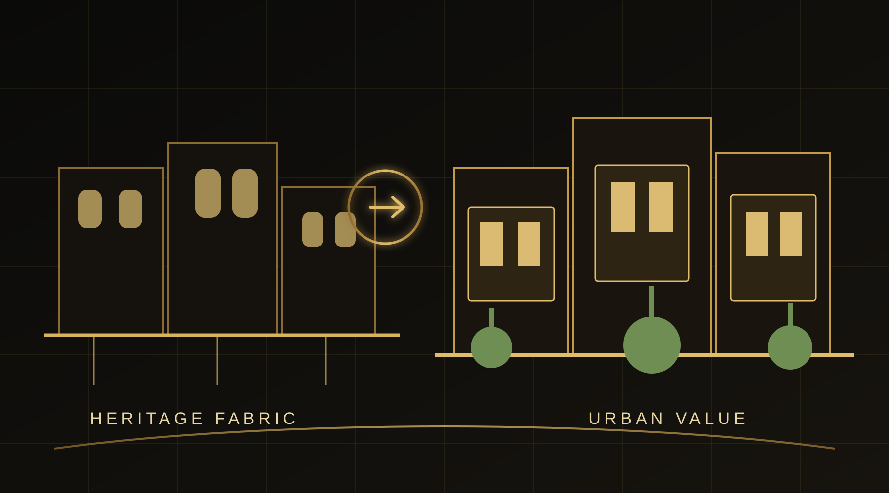

READ THE FABRIC
Map heritage assets, street hierarchy, movement, local commerce, memory and fragile edges before proposing intervention.

Mansoura • Haret El-Yahoud + Al-Borsa District
Regeneration does not begin by erasing what already exists. It begins by understanding what carries social, spatial and economic value — then building a development strategy around those assets.
Detailed area, GFA and financial figures were not present in the files supplied in this turn; these fields remain intentionally unclaimed until a project record is provided.
Map heritage assets, street hierarchy, movement, local commerce, memory and fragile edges before proposing intervention.
Identify where adaptive reuse, public realm, mixed uses and commercial activation can strengthen both place and investment logic.
Let new development support the district's character rather than replace it with a generic real estate language.
BADR works with landowners and developers to turn context, identity and underused urban assets into a clearer regeneration proposition.
DISCUSS A REGENERATION OPPORTUNITY ↗